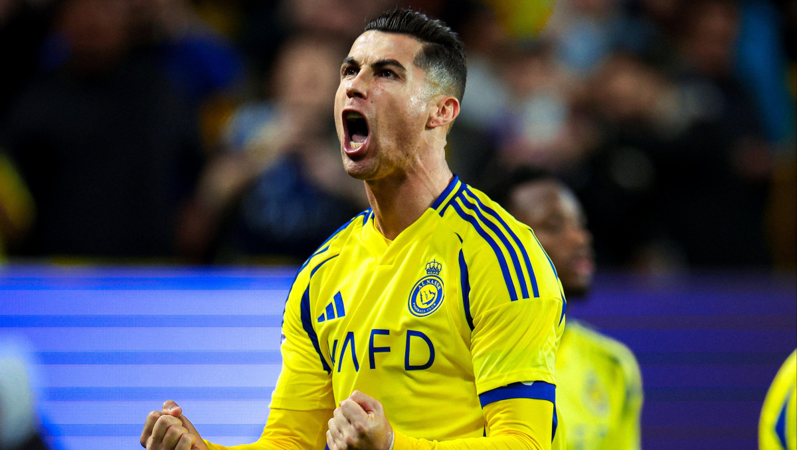

Криштиану Роналду
Португальский футболист, один из лучших игроков в истории и лучший бомбардир в истории сборных.
Смотреть карьеру →
5Золотых мячей
5Лиг чемпионов
5клубов в карьере
1985год рождения
О нём
Ранняя жизнь
Родился 5 февраля 1985 года в Фуншале на острове Мадейра в Португалии. Вырос в небогатой семье и с детства мечтал о футболе.

Личная жизнь
Отец пятерых детей. Его спутница — Джорджина Родригес. Известен благотворительностью: помогает детским больницам и пострадавшим от катастроф.
Сборная
Капитан сборной Португалии. Чемпион Европы 2016 года и победитель Лиги наций.